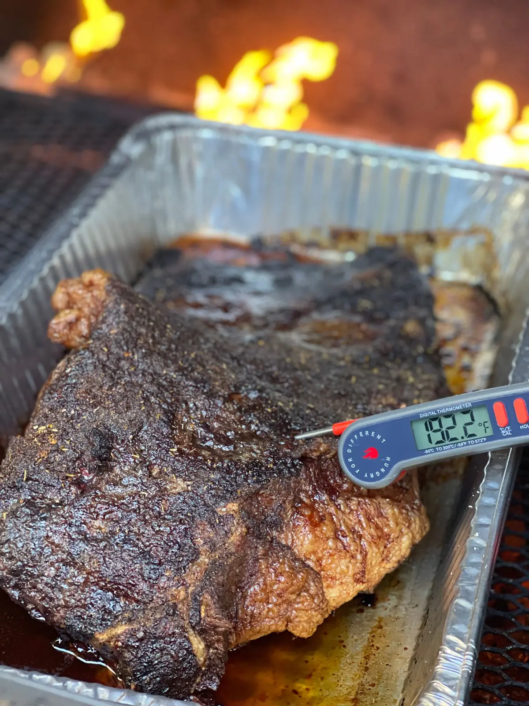
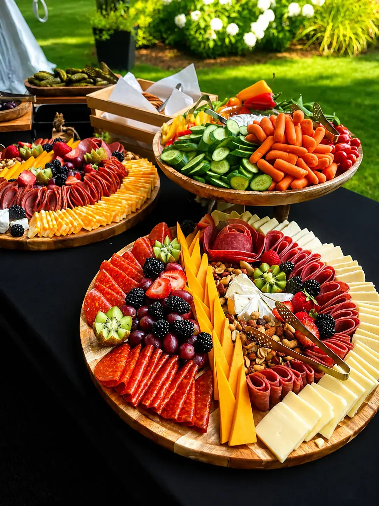

Take Out • Family Meals • Catering · Casco, Maine

We’re a small kitchen on Roosevelt Trail in Casco. We smoke brisket, pulled pork and chicken, make the sides from scratch, and pack it up to go or bring it to your party. Wednesday through Sunday, 11 to 6. Call ahead and we’ll have it ready.
Take Out MenuPrices include Maine State Sales Tax
All plates served with Mac & Cheese, BBQ Beans, Coleslaw & Cornbread.
4 Servings each
Wednesday – Sunday
11 am – 6 pm
224 Roosevelt Trail
Casco, ME 04015
(207) 693-8840
